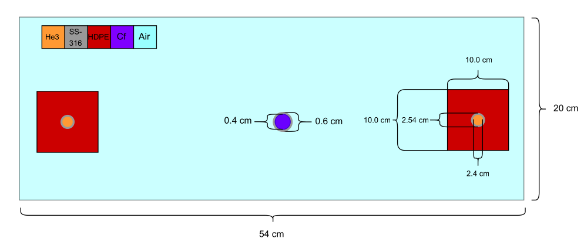
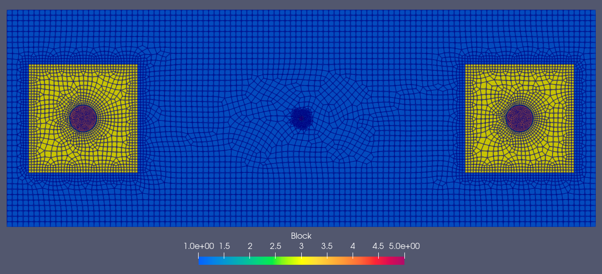
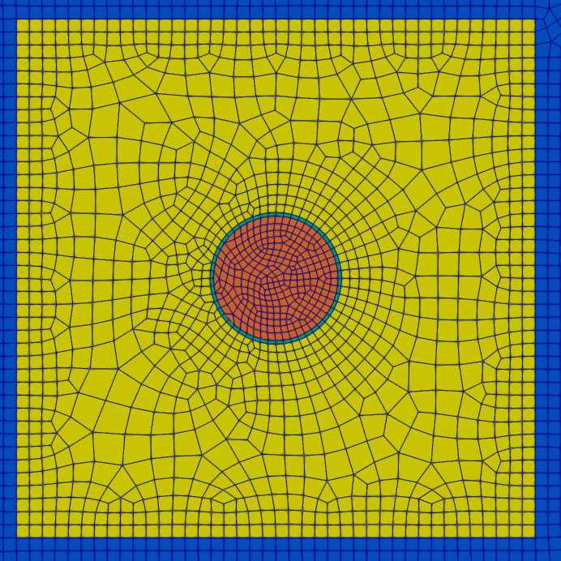
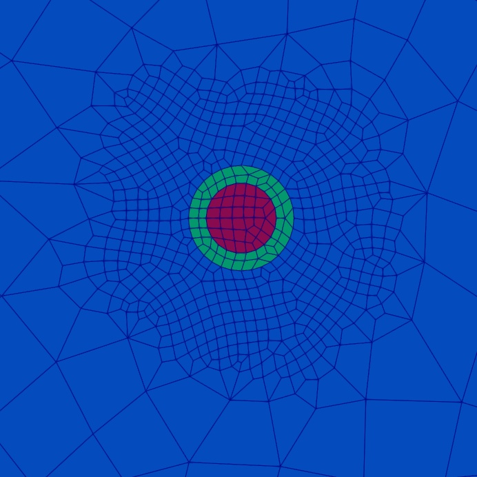
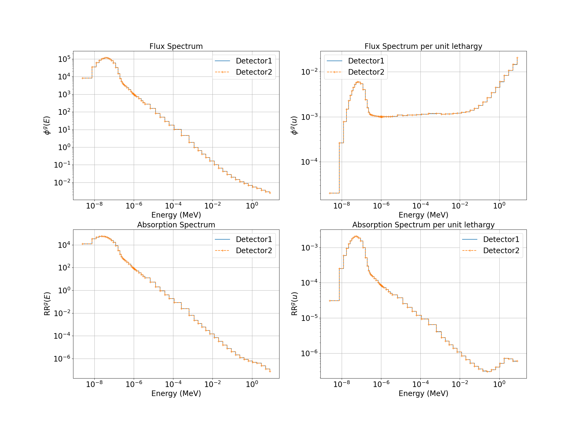
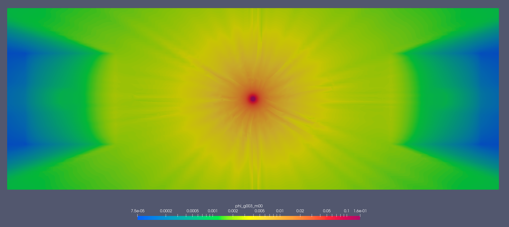
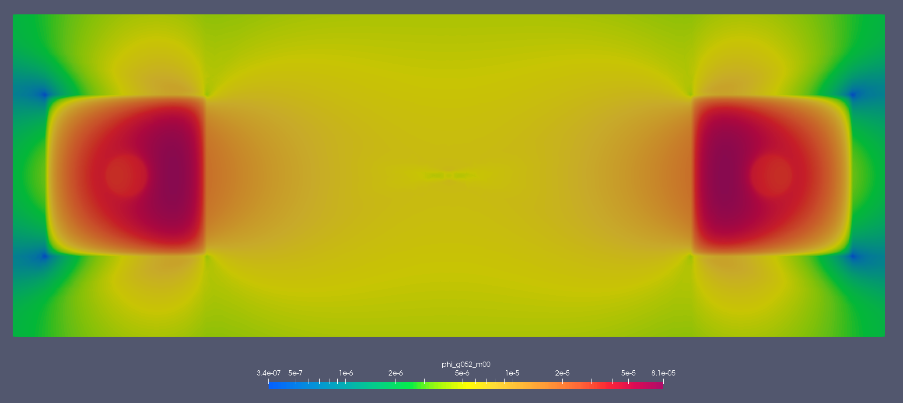
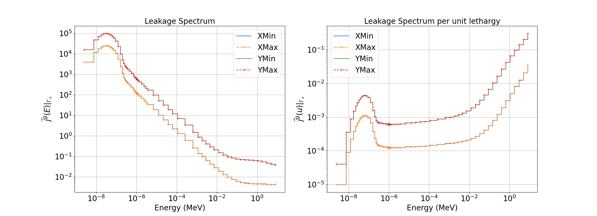

5.3.3. A Multigroup 2D Glovebox
In this example, we use OpenSn’s linear Boltzmann solver to compute response functions in two Helium-3 detectors within a mockup 2D glovebox.
The following is a complete transport simulation example. Each element of the simulation can be described in the sections below:
5.3.3.1. Prerequisites
Before running this example, make sure that the Python module of OpenSn was installed.
5.3.3.1.1. Converting and Running this Notebook from the Terminal
To run this notebook from the terminal, simply type:
jupyter nbconvert --to python --execute glovebox.ipynb.
To run this notebook in parallel (for example, using 4 processes), simply type:
mpiexec -n 4 jupyter nbconvert --to python --execute glovebox.ipynb.
[ ]:
from mpi4py import MPI
size = MPI.COMM_WORLD.size
rank = MPI.COMM_WORLD.rank
barrier = MPI.COMM_WORLD.barrier
if rank == 0:
print(f"Running the LBS glovebox example problem with {size} MPI processors.")
5.3.3.1.2. Import Requirements
Import required classes and functions from the Python interface of OpenSn. Make sure that the path to PyOpenSn is appended to Python’s PATH.
[ ]:
import os
import sys
import math
import numpy as np
# assuming that the execute dir is the notebook dir
# this line is not necessary when PyOpenSn is installed using pip
sys.path.append("../../..")
from pyopensn.mesh import FromFileMeshGenerator, PETScGraphPartitioner
from pyopensn.xs import MultiGroupXS
from pyopensn.source import VolumetricSource
from pyopensn.aquad import GLCProductQuadrature2DXY
from pyopensn.solver import DiscreteOrdinatesProblem, SteadyStateSourceSolver
from pyopensn.response import ResponseEvaluator
from pyopensn.math import Vector3, VectorSpatialFunction
from pyopensn.fieldfunc import FieldFunctionInterpolationVolume, \
FieldFunctionInterpolationLine, \
FieldFunctionGridBased
from pyopensn.logvol import RCCLogicalVolume
from pyopensn.context import UseColor, Finalize
5.3.3.2. Geometry
In this example, we define a 2D multigroup, source-driven detector response problem. The neutron source is modeled as a circular region of Cf-252 encased in 0.1 cm of stainless steel (SS-316). Two He-3 detectors are then defined as circular regions of He-3 within SS-316 sleeves, each embedded in a \(10\text{cm}\times 10\text{cm}\) block of high-density polyethylene (HDPE). The geometric layout of the problem is shown below:

5.3.3.3. Mesh
In this section, we import an unstructured mesh generated using the open-source meshing tool Gmsh.
[ ]:
meshgen = FromFileMeshGenerator(
filename="glovebox.msh",
partitioner=PETScGraphPartitioner(type='parmetis'),
)
grid = meshgen.Execute()
grid.SetOrthogonalBoundaries()



The total cell count for this mesh is 8,214.
5.3.3.3.1. Cross Sections
In this problem, we compute the multigroup absorption reaction rate in a He-3 detector. We begin by importing the multigroup cross sections, using the WIMS69 energy group structure for five materials:
Air
SS-316
HDPE
He-3
Cf-252
Since we are importing a Gmsh mesh, materials IDs are assigned to the corresponding physcial group ID. Look at glovebox.msh under PhysicalNames.
[ ]:
xs_dir = "WIMS69"
xs_air = MultiGroupXS()
xs_air.LoadFromOpenSn(xs_dir+"/Air.cxs")
xs_steel = MultiGroupXS()
xs_steel.LoadFromOpenSn(xs_dir+"/SS_316.cxs")
xs_hdpe = MultiGroupXS()
xs_hdpe.LoadFromOpenSn(xs_dir+"/HDPE.cxs")
xs_he3 = MultiGroupXS()
xs_he3.LoadFromOpenSn(xs_dir+"/He3.cxs")
xs_cf = MultiGroupXS()
xs_cf.LoadFromOpenSn(xs_dir+"/Cf252.cxs")
xsecs = [{"block_ids": [1], "xs": xs_air},
{"block_ids": [2], "xs": xs_steel},
{"block_ids": [3], "xs": xs_hdpe},
{"block_ids": [4], "xs": xs_he3},
{"block_ids": [5], "xs": xs_cf}]
5.3.3.4. Solver
5.3.3.4.1. Angular Quadrature
Since we are solving a 2D problem we will create Gauss-Legendre Product Quadrature in 2D. In this case we will use 2 polar angles and 128 azimuthal angles. With polar symmetry that leaves us with 128 angles.
[ ]:
pquad = GLCProductQuadrature2DXY(n_polar=2,
n_azimuthal=128,
scattering_order=0)
5.3.3.4.2. Group Structure
Since we are using the WIMS69 group structure, we define a groupset block with 69 energy groups.
[ ]:
num_groups = 69
grpsets = [
{
"groups_from_to": (0, num_groups-1),
"angular_quadrature": pquad,
"inner_linear_method": "petsc_gmres",
"l_abs_tol": 1.0e-9,
"l_max_its": 500,
"gmres_restart_interval": 100,
},
]
5.3.3.4.3. Source Definition
For the volumetric source, we first specify the source spectrum. In this case, we assign a uniform energy spectrum distributed throughout the source logical volume. Using VolumetricSource, this group-wise source definition is applied per unit area to material ID 5. Once the VolumetricSourceis defined, it is added to the physics options.
[ ]:
groups = np.flip([1.00000E-11, 5.00000E-09, 1.00000E-08, 1.50000E-08, 2.00000E-08,
2.50000E-08, 3.00000E-08, 3.50000E-08, 4.20000E-08, 5.00000E-08,
5.80000E-08, 6.70000E-08, 8.00000E-08, 1.00000E-07, 1.40000E-07,
1.80000E-07, 2.20000E-07, 2.50000E-07, 2.80000E-07, 3.00000E-07,
3.20000E-07, 3.50000E-07, 4.00000E-07, 5.00000E-07, 6.25000E-07,
7.80000E-07, 8.50000E-07, 9.10000E-07, 9.50000E-07, 9.72000E-07,
9.96000E-07, 1.02000E-06, 1.04500E-06, 1.07100E-06, 1.09700E-06,
1.12300E-06, 1.15000E-06, 1.30000E-06, 1.50000E-06, 2.10000E-06,
2.60000E-06, 3.30000E-06, 4.00000E-06, 9.87700E-06, 1.59680E-05,
2.77000E-05, 4.80520E-05, 7.55014E-05, 1.48729E-04, 3.67263E-04,
9.06899E-04, 1.42510E-03, 2.23945E-03, 3.51910E-03, 5.53000E-03,
9.11800E-03, 1.50300E-02, 2.47800E-02, 4.08500E-02, 6.73400E-02,
1.11000E-01, 1.83000E-01, 3.02500E-01, 5.00000E-01, 8.21000E-01,
1.35300E+00, 2.23100E+00, 3.67900E+00, 6.06550E+00, 1.00000E+01])
group_width = -np.diff(groups)
dE = groups[0] - groups[-1]
dA = np.pi*0.2*0.2
Q = (group_width / dE / dA).tolist()
vol_src = VolumetricSource(block_ids=[5], group_strength=Q)
5.3.3.4.4. Discrete Ordinates Problem
For establishing the discrete ordinate problem, we provide;
mesh : The mesh
num_groups : The number of energy groups
groupsets : The groupsets block
xs_map : Cross section map
volumetric_sources : The volumetric source
boundary_conditions : The boundary conditions
options : Physics solver options
[ ]:
phys = DiscreteOrdinatesProblem(
mesh=grid,
num_groups=num_groups,
groupsets=grpsets,
xs_map=xsecs,
volumetric_sources = [vol_src],
boundary_conditions = [
{"name": "xmin", "type": "vacuum"},
{"name": "xmax", "type": "vacuum"},
{"name": "ymin", "type": "vacuum"},
{"name": "ymax", "type": "vacuum"},
],
options = {"save_angular_flux": True},
)
5.3.3.4.5. Execute
We then create the physics solver, initialize it, and execute it.
[ ]:
ss_solver = SteadyStateSourceSolver(problem=phys)
ss_solver.Initialize()
ss_solver.Execute()
5.3.3.5. Post Processing
5.3.3.5.1. Volumetric Field Function
With the solver executed, we now create a FieldFunction. In OpenSn we define a FieldFunction for the response we will like to calculate. In this case we are looking to compute the total \(He^3\) absorption reaction rate in our glovebox:
Thus, in OpenSn we will generate a scalar field function using GetScalarFieldFunctionList with a sum over the RoI(s). In this case we have two detectors so we will create two logical volumes as our RoI’s.
[ ]:
det1 = [7.0, 10.0, 0.0]
det2 = [47.0, 10.0, 0.0]
dets = [det1, det2]
det_logvols = []
for det in dets:
r_he3 = 1.2
he3 = RCCLogicalVolume(
r=r_he3,
x0=det[0], y0=det[1],
z0=-2.0, vz= 2.0
)
det_logvols.append(he3)
At each group the solution \(\phi^g(\vec{r})\) is multiplied by the detector response at that group \(\sigma^{He3,g}_{a}\).
[ ]:
fflist = phys.GetScalarFieldFunctionList(only_scalar_flux=False)
sig_a = np.array(xs_he3.sigma_a)
fields = []
flux = []
resp = []
for d,det in enumerate(det_logvols):
flux.append([])
for g in range(num_groups):
ffi = FieldFunctionInterpolationVolume()
ffi.SetOperationType("sum")
ffi.SetLogicalVolume(det)
ffi.AddFieldFunction(fflist[g][0])
ffi.Initialize()
ffi.Execute()
phi_g = ffi.GetValue()
flux[d].append(phi_g)
if d == 0: fields.append(fflist[g][0])
resp.append(sig_a * flux[d])
if rank == 0:
print(f"{'Total Flux in Detector-1:'} {np.sum(flux[0]):.6e}")
print(f"{'Total Response in Detector-1:'} {np.sum(resp[0]):.6e}")
print(f"{'Total Flux in Detector-2:'} {np.sum(flux[1]):.6e}")
print(f"{'Total Response in Detector-2:'} {np.sum(resp[1]):.6e}")
[ ]:
import matplotlib.pyplot as plt
fig = plt.figure(figsize=(22,16))
emid = (groups[:-1]+groups[1:])/2
axs = []
if rank == 0:
# Flux spectrum
axs.append(fig.add_subplot(221))
axs[0].loglog(emid, flux[0]/group_width, label="Detector1", drawstyle='steps')
axs[0].loglog(emid, flux[1]/group_width, "--+", label="Detector2", drawstyle='steps')
axs[0].set_xlabel("Energy (MeV)", fontsize=20)
axs[0].set_ylabel(r"$\phi^g(E)$", fontsize=20)
axs[0].set_title("Flux Spectrum", fontsize=20)
axs[0].tick_params(axis='both', which='major', labelsize=20)
axs[0].legend(fontsize=20)
axs[0].grid()
# Flux spectrum per unit lethargy
axs.append(fig.add_subplot(222))
axs[1].loglog(emid, flux[0]*emid/group_width, label="Detector1", drawstyle='steps')
axs[1].loglog(emid, flux[1]*emid/group_width, "--+", label="Detector2", drawstyle='steps')
axs[1].set_xlabel("Energy (MeV)", fontsize=20)
axs[1].set_ylabel(r"$\phi^g(u)$", fontsize=20)
axs[1].set_title("Flux Spectrum per unit lethargy", fontsize=20)
axs[1].tick_params(axis='both', which='major', labelsize=20)
axs[1].legend(fontsize=20)
axs[1].grid()
# Absorption spectrum
axs.append(fig.add_subplot(223))
axs[2].loglog(emid, resp[0]/group_width,label="Detector1", drawstyle='steps')
axs[2].loglog(emid, resp[1]/group_width, "--+", label="Detector2", drawstyle='steps')
axs[2].set_xlabel("Energy (MeV)", fontsize=20)
axs[2].set_ylabel(r"$\text{RR}^g(E)$", fontsize=20)
axs[2].set_title("Absorption Spectrum", fontsize=20)
axs[2].tick_params(axis='both', which='major', labelsize=20)
axs[2].legend(fontsize=20)
axs[2].grid()
# Absorption spectrum per unit lehtargy
axs.append(fig.add_subplot(224))
axs[3].loglog(emid, resp[0]*emid/group_width,label="Detector1", drawstyle='steps')
axs[3].loglog(emid, resp[1]*emid/group_width, "--+", label="Detector2", drawstyle='steps')
axs[3].set_xlabel("Energy (MeV)", fontsize=20)
axs[3].set_ylabel(r"$\text{RR}^g(u)$", fontsize=20)
axs[3].set_title("Absorption Spectrum per unit lethargy", fontsize=20)
axs[3].tick_params(axis='both', which='major', labelsize=20)
axs[3].legend(fontsize=20)
axs[3].grid()
plt.savefig("images/Spectrum.png")

With our field function defined, we can also export the multi-group scalar flux, \(\phi^g(\vec{r})\), to a .vtu file using ExportMultipleToPVTU.
[ ]:
FFGrid = FieldFunctionGridBased
FFGrid.ExportMultipleToPVTU(fields, "Flux/glovebox")
Group 3: [1.353, 2.231] MeV

Group 52: [2.2e-07, 2.5e-07] MeV

5.3.3.5.2. Compute Leakage
We can simultanously compute the groupwise leakage rate at the problem boundaries, \(\vec{j}^{g}|_{\Gamma_{\text{+}}}\), of the problem domain.
[ ]:
leakage = phys.ComputeLeakage(["xmin", "xmax","ymin","ymax"])
lkg_xmin = leakage['xmin']
lkg_xmax = leakage['xmax']
lkg_ymin = leakage['ymin']
lkg_ymax = leakage['ymax']
fig = plt.figure(figsize=(22,8))
axs = []
if rank == 0:
# plt.figure(figsize=(16,9))
axs.append(fig.add_subplot(121))
axs[0].loglog(emid, lkg_xmin/group_width, drawstyle='steps', label="XMin")
axs[0].loglog(emid, lkg_xmax/group_width, "--+", drawstyle='steps', label="XMax")
axs[0].loglog(emid, lkg_ymin/group_width, drawstyle='steps', label="YMin")
axs[0].loglog(emid, lkg_ymax/group_width, "--+", drawstyle='steps', label="YMax")
axs[0].set_xlabel("Energy (MeV)", fontsize=20)
axs[0].set_ylabel(r"$\vec{j}^{g}(E)|_{\Gamma_{\text{+}}}$", fontsize=20)
axs[0].set_title("Leakage Spectrum", fontsize=20)
axs[0].tick_params(axis='both', which='major', labelsize=20)
axs[0].legend(fontsize=20)
axs[0].grid()
axs.append(fig.add_subplot(122))
axs[1].loglog(emid, lkg_xmin*emid/group_width, drawstyle='steps', label="XMin")
axs[1].loglog(emid, lkg_xmax*emid/group_width, "--+", drawstyle='steps', label="XMax")
axs[1].loglog(emid, lkg_ymin*emid/group_width, drawstyle='steps', label="YMin")
axs[1].loglog(emid, lkg_ymax*emid/group_width, "--+", drawstyle='steps', label="YMax")
axs[1].set_xlabel("Energy (MeV)", fontsize=20)
axs[1].set_ylabel(r"$\vec{j}^{g}(u)|_{\Gamma_{\text{+}}}$", fontsize=20)
axs[1].set_title("Leakage Spectrum per unit lethargy", fontsize=20)
axs[1].tick_params(axis='both', which='major', labelsize=20)
axs[1].legend(fontsize=20)
axs[1].grid()
plt.savefig("images/Lkg.png")
print(f"{'Total Leakage XMin :'} {np.sum(lkg_xmin):.6e}")
print(f"{'Total Leakage XMax :'} {np.sum(lkg_xmax):.6e}")
print(f"{'Total Leakage YMin :'} {np.sum(lkg_ymin):.6e}")
print(f"{'Total Leakage YMax :'} {np.sum(lkg_ymax):.6e}")
tot_lkg = np.sum(lkg_xmin)+np.sum(lkg_xmax)+ \
np.sum(lkg_ymin)+np.sum(lkg_ymax)
print(f"{'Total Leakage :'} {tot_lkg:.6e}")
Total Leakage : 1.035658e+00

5.3.3.5.3. Compute Balance
5.3.3.6. Finalize (for Jupyter Notebook only)
In Python script mode, PyOpenSn automatically handles environment termination. However, this automatic finalization does not occur when running in a Jupyter notebook, so explicit finalization of the environment at the end of the notebook is required. Do not call the finalization in Python script mode, or in console mode.
Note that PyOpenSn’s finalization must be called before MPI’s finalization.
[ ]:
from IPython import get_ipython
def finalize_env():
Finalize()
MPI.Finalize()
ipython_instance = get_ipython()
if ipython_instance is not None:
ipython_instance.events.register("post_execute", finalize_env)
os.system("rm -rf Data Flux Results")